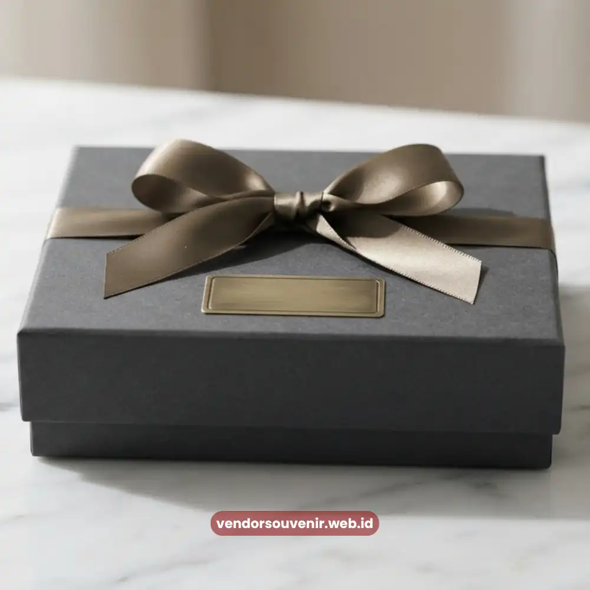

Daftar Isi
Souvenir kantor eksklusif Palembang adalah pilihan merchandise korporat premium yang membantu perusahaan memperkuat citra profesional. Panduan ini membahas jenis, manfaat, dan cara memilihnya secara tepat.
Apa Itu Souvenir Kantor Eksklusif?
Souvenir kantor eksklusif adalah barang cendera mata bernilai tambah yang dirancang khusus untuk kebutuhan korporat, biasanya dengan kualitas bahan yang lebih baik dibandingkan merchandise umum.
Souvenir jenis ini digunakan perusahaan di Palembang untuk berbagai keperluan, mulai dari acara internal, seminar, hingga hadiah untuk klien dan mitra bisnis.
Untuk Siapa Souvenir Kantor Eksklusif Digunakan?
Souvenir kantor eksklusif umumnya digunakan oleh tim HR, divisi marketing, dan event organizer perusahaan.
Kelompok ini membutuhkan souvenir yang mencerminkan identitas perusahaan sekaligus memberikan kesan berkelas kepada penerima, baik karyawan internal maupun tamu eksternal.
Kapan Souvenir Kantor Eksklusif Dibutuhkan?
Souvenir kantor eksklusif biasanya dibutuhkan saat perusahaan mengadakan seminar, pelatihan, gathering tahunan, peluncuran produk, atau kunjungan klien penting.
Momen-momen tersebut menjadi kesempatan bagi perusahaan untuk menghadirkan pengalaman berkesan melalui pemberian souvenir yang relevan dengan acara.
Mengapa Souvenir Kantor Penting bagi Perusahaan di Palembang?
Souvenir kantor penting karena berperan sebagai media branding yang dapat diingat lebih lama dibandingkan promosi digital semata.
Bagi perusahaan di Palembang, souvenir yang dipilih dengan cermat dapat memperkuat hubungan dengan klien lokal maupun memperluas jaringan bisnis di wilayah Sumatera Selatan.
Souvenir yang berkualitas juga menunjukkan bahwa perusahaan memperhatikan detail dan menghargai relasi bisnisnya.
Secara umum, pemberian merchandise korporat yang tepat sasaran dapat meningkatkan loyalitas karyawan dan membangun kesan positif di mata mitra maupun calon klien, meskipun besarnya dampak tersebut dapat bervariasi tergantung jenis acara dan target penerima.
Apakah Souvenir Kantor Memengaruhi Citra Perusahaan?
Ya, souvenir kantor secara langsung memengaruhi citra perusahaan karena menjadi representasi fisik dari nilai dan standar kualitas yang dijunjung perusahaan.
Souvenir dengan desain rapi, bahan berkualitas, dan kemasan profesional cenderung meninggalkan kesan lebih baik dibandingkan merchandise seadanya.
Jenis-Jenis Souvenir Kantor Eksklusif yang Populer di Palembang
Terdapat tiga kategori utama souvenir kantor eksklusif yang banyak dicari perusahaan di Palembang, yaitu paket seminar kit, souvenir teknologi kantor, dan hampers ramah lingkungan. Ketiganya memiliki fungsi dan konteks penggunaan yang berbeda.
Paket Seminar Kit Profesional
Paket seminar kit profesional adalah kumpulan perlengkapan yang biasanya diberikan kepada peserta seminar, workshop, atau pelatihan korporat. Isi paket ini umumnya mencakup alat tulis, notes, tas jinjing, dan kadang dilengkapi flashdisk atau power bank.
Pembahasan lengkap mengenai jenis isi paket, cara memilih vendor, serta kisaran biaya dapat dibaca pada artikel Paket Seminar Kit Eksklusif.
Souvenir Teknologi Kantor
Souvenir teknologi kantor merujuk pada merchandise berbasis gadget atau perangkat elektronik ringan seperti power bank, flashdisk custom, speaker portabel, atau charger multifungsi.
Kategori ini digemari karena dianggap lebih fungsional dan modern dibandingkan souvenir konvensional. Panduan lengkap mengenai pilihan souvenir teknologi kantor tersedia pada artikel Ide Souvenir Teknologi Brand.
Hampers Ramah Lingkungan Perusahaan
Hampers ramah lingkungan perusahaan adalah paket hadiah korporat yang menggunakan bahan berkelanjutan, seperti kemasan daur ulang, produk lokal, atau barang berbahan dasar alami.
Jenis souvenir ini semakin diminati seiring meningkatnya perhatian perusahaan terhadap isu keberlanjutan. Detail mengenai komponennya dapat disimak pada artikel Hampers Ramah Lingkungan Perusahaan.

Kemasan Hadiah Korporat Premium Berkualitas Tinggi
Bagaimana Cara Memilih Souvenir Kantor yang Tepat?
Cara memilih souvenir kantor yang tepat adalah dengan menyesuaikan jenis souvenir terhadap tujuan acara, karakter penerima, dan anggaran yang tersedia.
Perusahaan sebaiknya tidak hanya berfokus pada harga, tetapi juga mempertimbangkan kualitas dan relevansi souvenir terhadap identitas merek.
Apa Saja Faktor yang Perlu Dipertimbangkan?
Beberapa faktor yang perlu dipertimbangkan meliputi tujuan pemberian souvenir, profil penerima, kesesuaian dengan tema acara, kualitas bahan, kemudahan kustomisasi logo, serta ketepatan waktu pengiriman dari vendor.
Faktor anggaran juga tetap menjadi pertimbangan penting agar pengeluaran perusahaan tetap terkendali.
Bagaimana Menentukan Anggaran Souvenir Kantor?
Anggaran souvenir kantor sebaiknya ditentukan berdasarkan skala acara dan jumlah penerima.
Untuk acara internal skala kecil, perusahaan dapat memilih souvenir dengan harga per unit yang lebih terjangkau, sedangkan untuk acara formal seperti seminar besar atau kunjungan klien penting, alokasi anggaran per unit biasanya lebih tinggi.
Kisaran biaya secara pasti dapat bervariasi tergantung vendor dan jenis produk yang dipilih.
Kesalahan Umum saat Memilih Souvenir Korporat
Kesalahan umum saat memilih souvenir korporat antara lain memilih produk hanya berdasarkan harga termurah tanpa mempertimbangkan kualitas, tidak menyesuaikan souvenir dengan tema acara, serta terlambat melakukan pemesanan sehingga proses kustomisasi logo tidak maksimal.
Kesalahan lain yang sering terjadi adalah mengabaikan uji sampel produk sebelum pemesanan dalam jumlah besar.
Perusahaan juga kerap kurang memperhatikan kemasan souvenir, padahal kemasan turut memengaruhi kesan pertama penerima. Souvenir berkualitas baik namun dikemas seadanya dapat mengurangi nilai eksklusivitas yang ingin ditampilkan.
Tips Memaksimalkan Branding melalui Souvenir Kantor
Tips memaksimalkan branding melalui souvenir kantor meliputi pemilihan warna dan desain yang konsisten dengan identitas visual perusahaan, penempatan logo yang proporsional, serta pemilihan jenis souvenir yang benar-benar akan digunakan oleh penerima sehari-hari.
Souvenir yang sering digunakan, seperti alat tulis atau tumbler, cenderung memberikan eksposur merek yang lebih lama dibandingkan souvenir yang jarang dipakai.
Bekerja sama dengan vendor souvenir kantor di Palembang yang berpengalaman juga membantu perusahaan mendapatkan saran desain dan pemilihan bahan yang sesuai dengan anggaran serta tujuan acara.

Pilihan Souvenir Korporat Premium dari Vendor Terpercaya
Kesimpulan
Souvenir kantor eksklusif Palembang merupakan investasi branding yang dapat memperkuat citra profesional perusahaan bila dipilih dengan tepat.
Perusahaan disarankan mempertimbangkan tujuan acara, profil penerima, dan anggaran sebelum menentukan jenis souvenir, baik itu paket seminar kit, souvenir teknologi kantor, maupun hampers ramah lingkungan.
Konsultasi dengan vendor souvenir berpengalaman di Palembang juga membantu memastikan hasil akhir sesuai standar korporat yang diharapkan.
Siap Memesan Souvenir Kantor Eksklusif?
Kami siap membantu menyiapkan souvenir kantor terbaik sesuai kebutuhan dan anggaran perusahaan Anda di Palembang.
Konsultasikan desain custom logo dan jadwal pengiriman Anda sekarang juga.
Dapatkan penawaran harga terbaik!
Maroon Souvenir
Partner Corporate Gift terpercaya di Indonesia. Berpengalaman melayani ratusan perusahaan sejak 2018.
Lihat Portofolio Kami